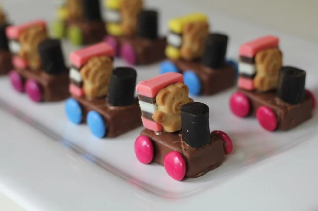

Bears on Trains

Choochoo-ing on Trains
Made of chocolates and licorice, these snacks will have your stomach growl-ing with hunger! This fun recipe will bear 12 little train snacks the whole family can snack on :D
Ingredients
- 100g chocolate (melted) -> glue
- 1 x 340g packet of Smarties (substitutes: M&M's, Skittles) -> wheels
- 12 x 25g Milky Way Chocolate Bars (substitues: any chocolate bars, Rice Krispies, Snack Bars) -> train body
- 1 x 200g packet of Pascall Licorice Allsorts -> train seat
- 1 x 180g Natural Confectionary Co Licorice sticks -> train steam spout
- 1 x 250g box of Tiny Teddies -> bear conductor
Recipe Steps
- Place the chocolates in a bowl and melt the chocolate using either of the two methods listed below:
- Beginner: Microwave the chocolates in 20 second intervals mixing and checking the chocolate each time until it is fully melted.
- Intermediate: Place the bowl of chocolates over a simmering pot of water and stir the chocolates until it is fully melted.
Congratulations! You now have melted chocolate and this will act as the glue in this recipe. The melted chocolate will now be referred to as the glue throughout the recipe steps.
- Place 2 Smarties on each of the long sides of the Milky Way Bar using the glue for the wheels.
- Glue half of the Licorice Allsorts on top of the Milky Way to create the backseat for the bear conductor.
- Cut the licorice sticks in half and glue it on the front of the train for the steam spout.
- Finally, cut the Tiny Teddy off at the waist and place them in their seat using the glue
Voila! You have succesfully created your bear-y own teddy bear train snacks!
Go back to the homepage to try the other recipes :D